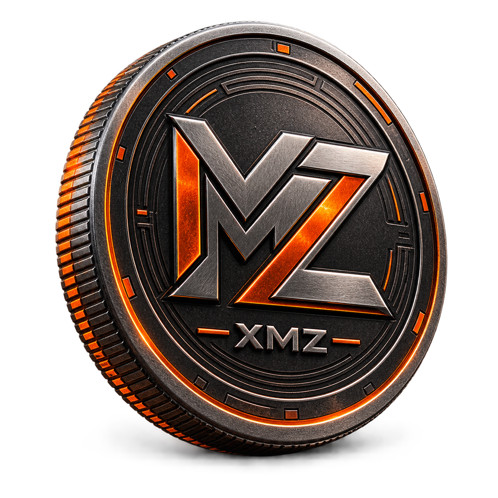

Genesis network · Experimental prerelease
Privacy should be ordinary.
Monzero is an independent, community-run digital currency built for private transactions, open participation, and CPU-friendly mining.
RandomX PoW
2-minute blocks
No premine

86 / 87 / 88 XMZ · MAINNETAssetXMZ
Target supply100M
Block target120 SEC
Precision11 DECIMALS
Live network
A chain you can verify.
The official public node gives every wallet and miner a stable entry point into the Monzero network.
Checking node
node.monzero.org
P2Pnode.monzero.org:6174
Restricted RPCnode.monzero.org:6175
Mining network
Anonymous miner ranking.
Live, opt-in statistics from participating miners. No wallet address, IP address, hostname, or hardware identifier is displayed.
| Rank | Anonymous miner | Speed | Blocks found | Status |
|---|---|---|---|---|
Reported hash rate—
Rolling browser history · H/s
Network difficulty—
Rolling browser history · network difficulty
Statistics are self-reported and miners disappear after three minutes without a heartbeat. A random installation ID is pseudonymized by the server.
Why Monzero
Built around participation.
Private transactions
Monzero inherits established privacy-focused transaction technology, including ring signatures, stealth addresses, and confidential amounts.
Consumer hardware
RandomX proof of work is designed for general-purpose CPUs, keeping participation open to ordinary computers.
Independent chain
XMZ has its own genesis block, network identity, address prefixes, ports, and monetary policy. It is not Monero.
Join the network
Turn spare CPU time into network security.
Run your own daemon, create a fresh Monzero wallet, and mine directly to an address you control. Solo mining rewards the machine that finds a block; rewards unlock after 60 blocks.
Keep it separate. Never reuse a Monero seed, keys, or wallet file with Monzero.
- 1Start the node
./start-monzerod.sh - 2Start the separate miner
./start-monzero-miner.sh YOUR_ADDRESS 1 - 3Open the wallet when needed
./start-monzero-wallet-cli.sh
Genesis pre5
Download Monzero
Experimental command-line builds for Windows and Linux x86-64. Both include the node, command-line wallet, wallet RPC, checksums, release status, and upgrade guidance. The recursively complete source archive contains the exact pinned commit and submodules. The current Windows package does not include the graphical wallet.
Unsigned and unaudited prerelease software. These locally reproducible packages still require independent reproduction and clean-system testing.
Windows x64 25 MB · ZIP
Windows SHA-256 checksum
7870ed552f4c1d4b92260d8cfbd25260b1c983edc36c5136965e555162cdcc42
Linux x86-64 28 MB · TAR.GZ
Linux SHA-256 checksum
99e4be1dda90dad94ca624fb19f734f8a5faf9ad6c8cbcb3391da7269c507675
Complete source 21 MB · TAR.GZ
Source SHA-256 checksum
a958217d92418d35f59fedb2734dbb1162562876ef0896f74a7d42e94789beca
Windows binaries are currently unsigned. Windows SmartScreen may show an unknown-publisher warning; verify the checksum before running them.
Questions
Before you begin.
Why is my mining balance still zero?
Monzero currently uses solo mining. You receive a coinbase reward only when your machine finds a block; simply hashing does not create a gradual balance. A found reward remains locked for 60 blocks.
Is Monzero the same network as Monero?
No. Monzero is an independent experimental chain with a different genesis block, network ID, ports, address prefixes, ticker, and monetary policy.
Can I reuse my existing seed?
No. Create a new wallet and seed exclusively for Monzero. Reusing keys across forks can seriously damage privacy.
Is this a production release?
Not yet. Genesis pre5 is experimental prerelease software. The packages are unsigned, have not been independently reproduced, and the consensus and cryptographic changes have not received an independent audit.